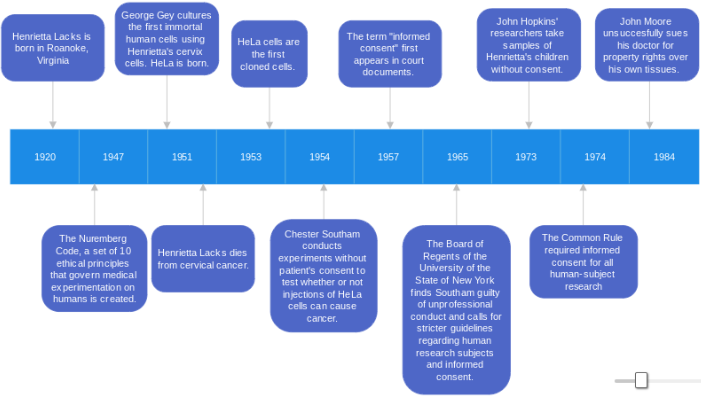

Henrietta Lacks' Story
The story of Henrietta Lacks, whose cells were taken without her consent in the 1950s, is a haunting and profound example of the intersection between medical ethics, race, and law. Her HeLa cells revolutionized medical research, yet Henrietta Lacks herself was never informed that her cells would be used for scientific purposes. This breach of trust and violation of consent speaks to broader patterns of injustice, especially within marginalized communities. The Immortal Life of Henrietta Lacks not only highlights the personal and familial toll of this exploitation but also illustrates how the legal system failed to protect Lacks and countless others, particularly African Americans, in the medical field. In this project, I will explore the evolution of “informed consent” as a legal and ethical concept, beginning with its first legal reference in Salgo v. Leland Stanford Jr. University Board of Trustees and tracing its development over time. By focusing on key moments in the timeline, such as 1957, 1965, 1973, 1974, and 1984, we will see how the law’s failure to define and enforce informed consent contributed to the systemic abuse of Black bodies in medical research. This historical lens allows us to understand how legal protections, even when established, were often ineffective for marginalized communities like the Lacks family. The stakes of this project are profound. In exploring the history of informed consent and its failures, we can better understand the long-term effects of these ethical violations — not just for individuals like Henrietta Lacks, but for entire communities who continue to feel distrust toward the medical system. This project aims to show that informed consent isn’t just a legal term; it’s a human right that holds the power to prevent exploitation and ensure respect for individual autonomy. By analyzing these injustices, we can learn how healthcare ethics and law must evolve to protect the rights and dignity of all people, regardless of race or socioeconomic status.
Timeline of Events
-
